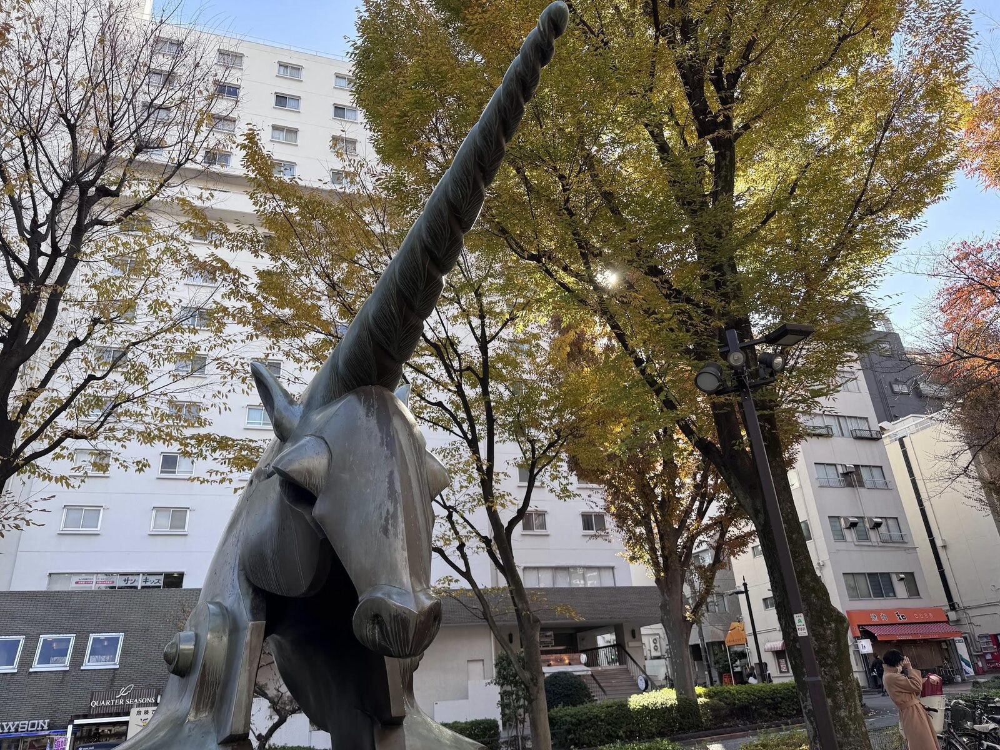

§ 01 // EVENTS
Two gatherings, one field.
#開催一覧。
Next · 次回

Seminarセミナー
エジプトの諸文字は、エジプト語の表記にどこまで適していたのか
How well adapted were the Egyptian writings for transcribing Egyptian?
Prof. Jean Winandジャン・ヴィナン先生 — リエージュ大学（ベルギー）
Date
3 Nov 2026 (Tue)
11月3日（火・祝）文化の日
Time
13:30 — 18:00 JST
全3部
Venue
Hongo Campus, U. of Tokyo
東京大学本郷キャンパス 法文2号館 1番大教室
Archive · 開催済

Symposium · Vol. IIシンポジウム
The 2nd International Symposium of Egyptology in Tokyo
第2回 東京エジプト学国際シンポジウム（ISET 2026）
12 papers · 13 scholars12の発表・13名の研究者
Date
16 July 2026 (Thu)
7月16日（木）
Time
09:00 — 17:10 JST
＋ 夕刻のエクスカーション
Venue
Tokyo Campus, U. of Tsukuba
筑波大学 東京キャンパス 講義室120（茗荷谷）
Note
Next day after CRE26 Tokyo
CRE26 Tokyo の翌日開催